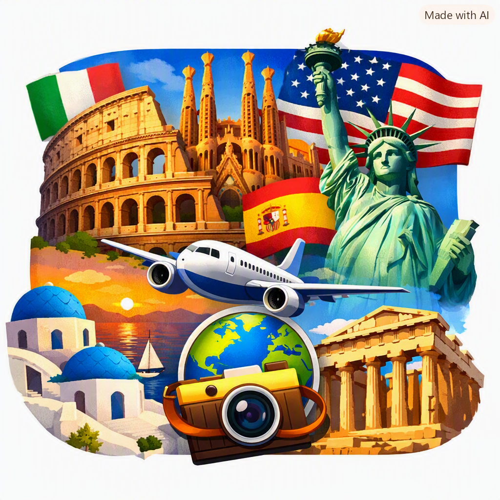
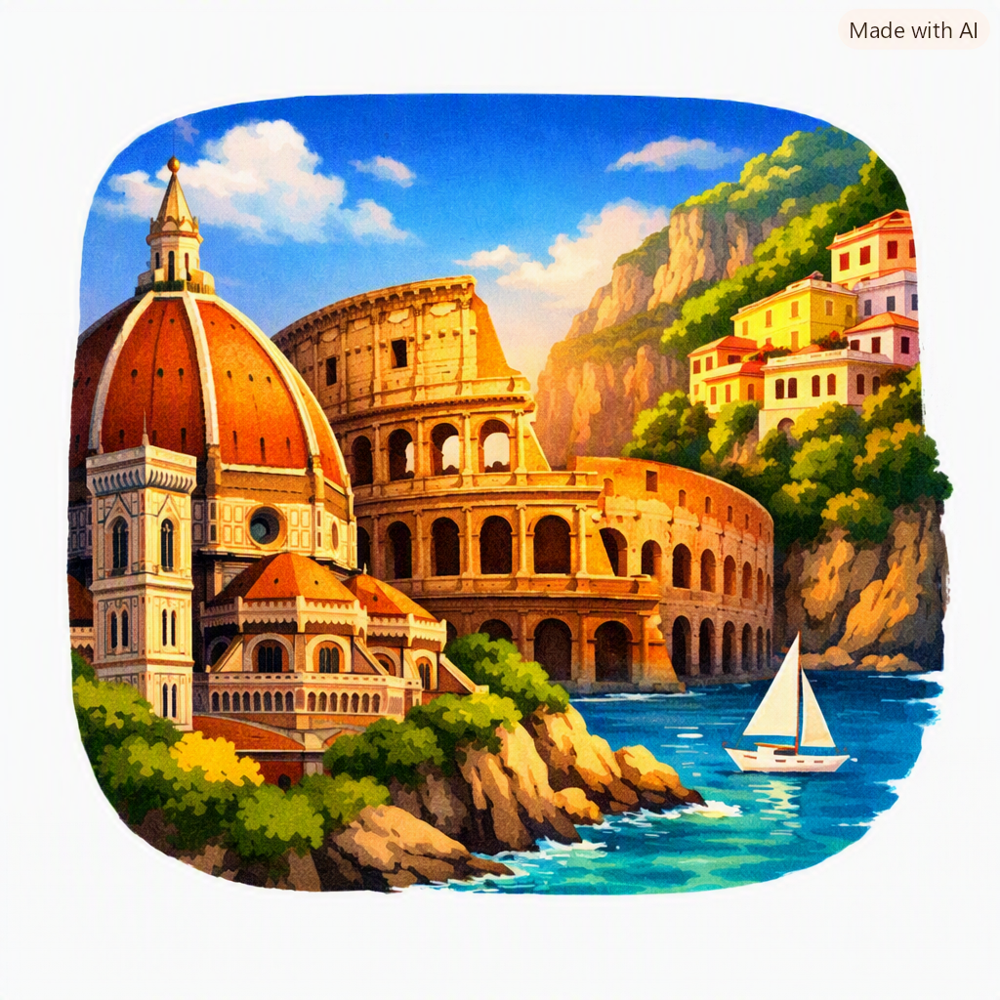
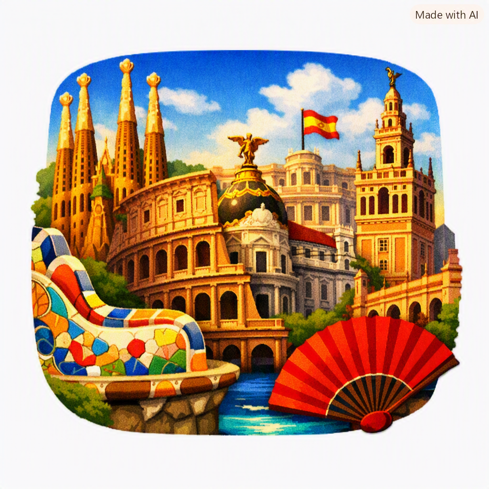

Meu primeiro post
Por: Isabella
Boas-vindas ao meu novo blog! Aqui vou compartilhar lugares que tenho vontade de visitar.
Vou mostrar viagens que eu tenho vontade de realizar

Meu primeiro post
Por: Isabella
Boas-vindas ao meu novo blog! Aqui vou compartilhar lugares que tenho vontade de visitar.

Top Lugares Para Conhecer na Itália
Por: Isabella
Essa postagem é sobre TOP 3 Lugares da Itália:

Lugares na Espanha
Por: Isabella
Barcelona Basílica da Sagrada Família, Parque Güell e o bairro Gótico. Famosa pela arquitetura surrealista de Antoni Gaudí e por combinar a energia de uma metrópole cultural com praias urbanas no Mediterrâneo. É perfeita para explorar arte, vida noturna e a gastronomia catalã Madri Museu do Prado, Parque do Retiro e Plaza Mayor. A capital espanhola reúne grandes museus de classe mundial, praças históricas imponentes e a tradicional cultura dos bares de tapas. Oferece uma atmosfera calorosa, ideal para caminhadas entre parques e bairros vibrantes. Sevilha Real Alcázar, Praça da Espanha e o bairro de Santa Cruz. Localizada na região da Andaluzia, destaca-se pela forte influência mourisca na arquitetura e por ser o berço do flamenco. É o destino certo para vivenciar tradições históricas intensas e caminhar por ruelas repletas de pátios floridos.

Jogos Modernos x Jogos Retrô
Por: Rodrigo Mendes
Apesar de oferecer experiências gráficas e cinemáticas, jogos modernos deixam a desejar em duração em gameplays, checkpoints contínuos e histórias recicladas ou reaproveitadas de obras de cinema

Jogos de Plataformas
Por: Rodrigo Mendes
é um jogo eletrônico visto de perfil onde a câmera se move horizontalmente conforme o personagem caminha, pula e corre pelos cenários. Exemplos são Super Mario Bro, Sonic e Donkey Kong Country

Metroidvania
Por: Rodrigo Mendes
Metroidvania é um subgênero de jogos eletrônicos focado na exploração não linear de um grande mapa interconectado e na progressão guiada por habilidades. Exemplos são Super Metroid e Castlevania - Symphony of the Night